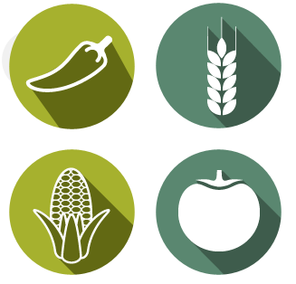

© All rights reserved to OrrisLife Sciences
A growing and aging world population, limited natural resources and the impact of climate change make it important to use biotech tools for crop improvement.
OrrisLife Sciences is a Plant-Biotech company that identifies, develops and commercializes technologies by delivering traits to crops in order to enhance their performance.
OrrisLife uses advanced screening, modern breeding and biotechnology techniques by integrating various platforms to create 3D traits – Desirable, Diverse and Different Traits.
The R & D group focuses on stress resilient and
value-added crops such as rice, maize, tomato,
chilli and cucumber among others.
